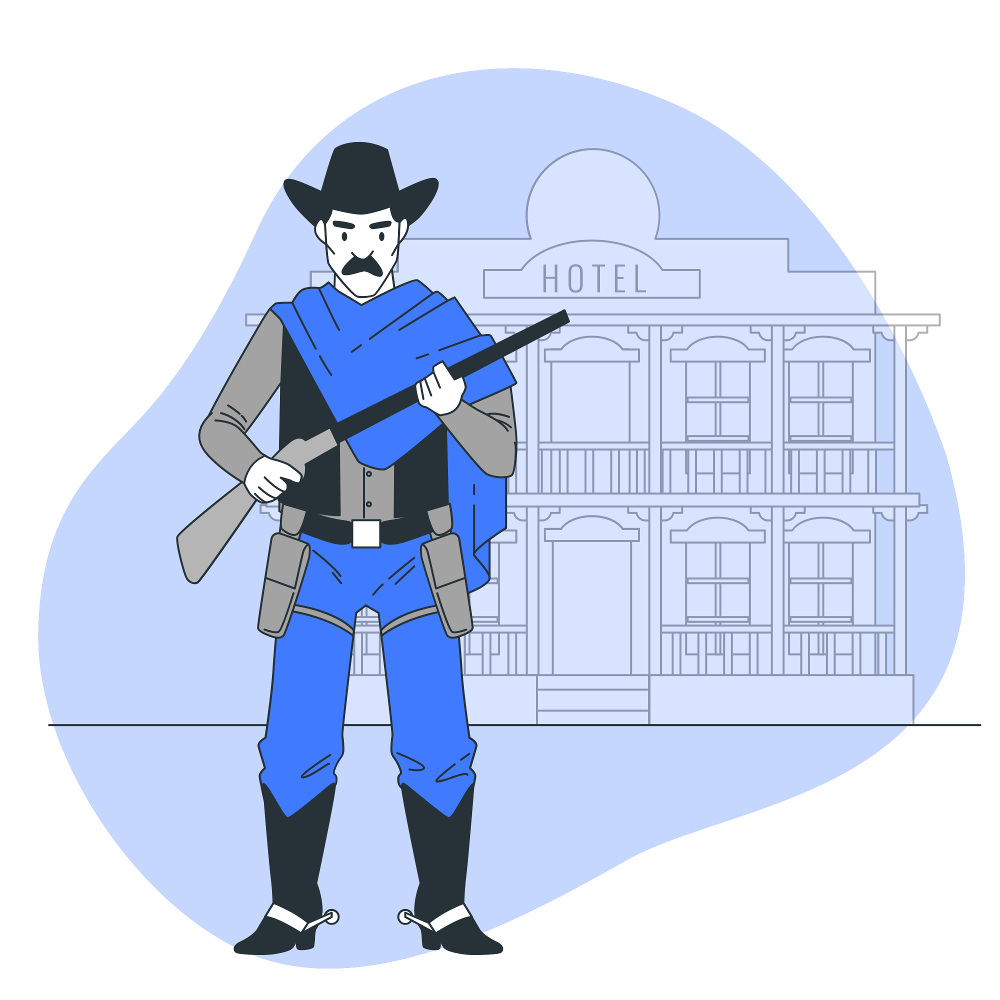
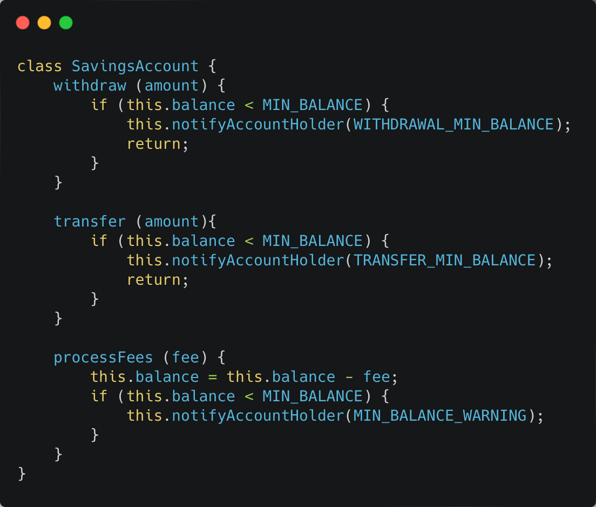
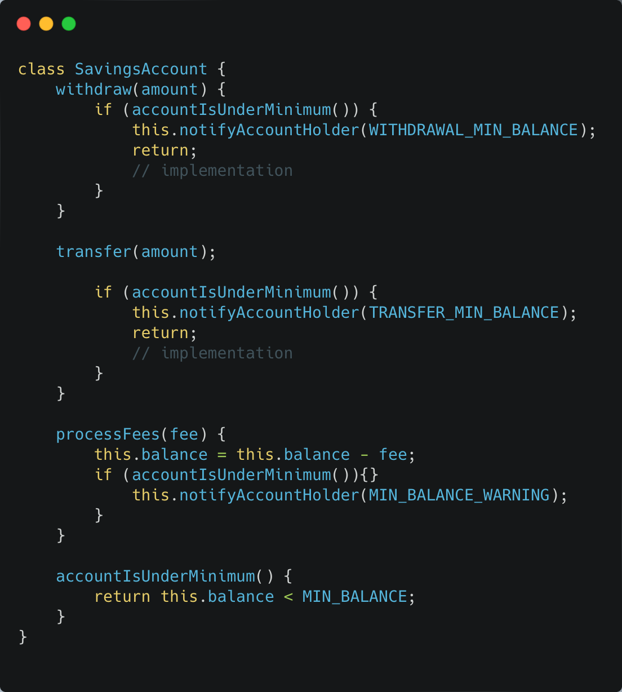

Change Preventer
Shotgun Surgery
–– Penjelasan Smell
Shotgun Surgery adalah sebuah smell code yang terjadi ketika kita ingin mengubah atau menambahkan fitur ke dalam code, namun kita harus mengganti bagian code yang tersebar di banyak class lain. Bayangkan seseorang ditembak dengan senjata api jenis shotgun, luka tembak akan menyebar di banyak tempat. Sama dengan Shotgun Surgery, di mana perubahan code yang kecil dapat berakibat pada perubahan di banyak class yang berbeda. Smell ini menyerupai Divergent Change tetapi sebenarnya memiliki ciri-ciri yang berlawanan. Divergent Change adalah ketika banyak perubahan dilakukan pada satu kelas. Sedangkan Shotgun Surgery mengacu pada saat satu perubahan dilakukan pada beberapa kelas secara bersamaan.
–– Penyelesaian
Kelas SavingsAccount ini sekilas terlihat baik-baik saja, namun masalahnya terletak pada pengulangan kode yang sangat mirip. Hal ini terlihat pada pengecekan saldo minimum, yaitu this.balance < MIN_BALANCE. Pengecekan ini dilakukan di tiga tempat yang berbeda. Jika nantinya definisi saldo minimum ini perlu diubah, maka kita harus melakukan perubahan di ketiga tempat tersebut. Perlu dicatat bahwa meskipun kode keseluruhannya tidak identik di setiap tempat, logika inti dari pengecekan tersebut adalah sama.
Untuk memperbaiki kode SavingsAccount yang memiliki logika pengecekan saldo minimum yang berulang, kita dapat menggunakan metode Extract Method. Metode ini memungkinkan kita untuk mengekstrak logika pengecekan saldo minimum yang berulang ke dalam method baru yang terpisah.
Kode setelah direfactor:
